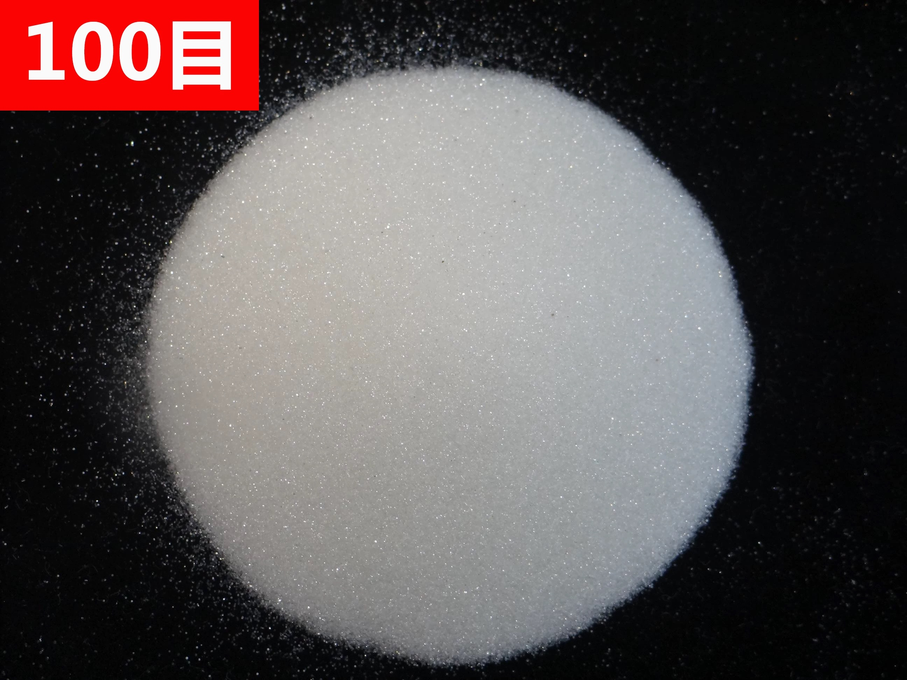

Products / Non-metal Abrasives

Glass Beads
Glass beads have a smooth spherical surface, chemical stability and reflective properties. They are used for cleaning, strengthening and industrial filling applications.
Typical applications
- Metal cleaning
- Shot peening
- Road marking reflection
- Industrial fillers
Specifications
| Material | Glass |
|---|---|
| Shape | Spherical |
| Feature | Smooth and chemically stable |
Grades, hardness, particle size and packing can be matched to the workpiece, blasting machine and required surface profile. Send your application and current abrasive specification for confirmation.
Request product quotationSupplier support
Metal abrasive selection for industrial blasting
Qishun supports foundries, shipyards, steel structure factories and surface-preparation contractors with abrasive selection, specification matching, export packing and order follow-up from Zouping, Shandong, China.
Review quality control